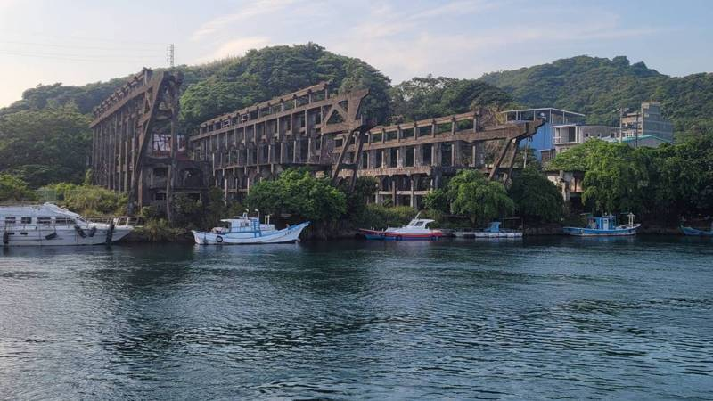
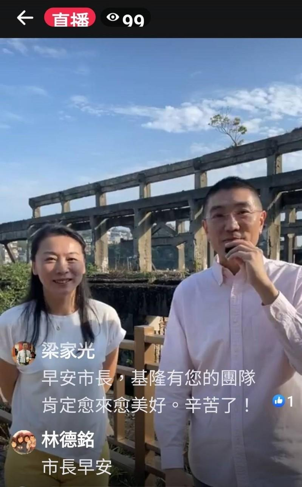
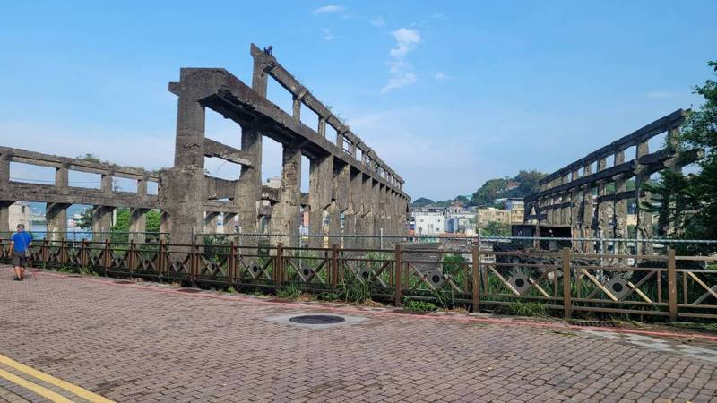
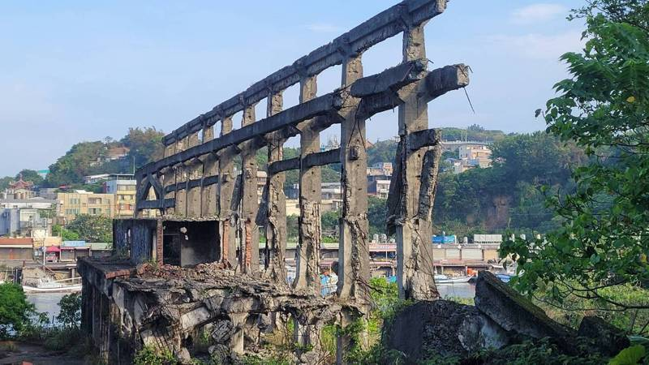

台湾基隆知名网红打卡热点「阿根纳造船厂」是历史建筑，电影「美国队长」曾来此拍照取景，声名大噪，因被拆掉一半，加上钢筋裸露，残破美感反吸引不少游客造访。市长谢国梁今天(7)宣布，市府与台糖合作，已找到企业，将重新定位和发展，会保留历史建筑，未来规画有旅宿功能的多功能饭店，结合渔业、文化与海洋成为观光亮点。
谢国梁今天一早到阿根纳造船厂遗构现场脸书直播，他表示，上任后积极活化闲置空间、历史建筑，和平岛阿根纳造船厂是历史建筑，对面就是彩色屋、台畜公车亭，目前已有最新发展，市府文化观光局与台糖合作，已找到企业，将重新定位和发展，会保留历史建筑整体规画，未来将会很好玩。
谢国梁表示，未来将规画阿根纳造船厂为有旅宿功能的饭店，是已经确定的方案，希望在1年内动工整修，未来会有教育、旅宿、海鲜等功能，会打造一个全新的阿根纳、全新的和平岛观光旅游廊带。
文化观光局长江亭玫说，将打造这里为蓝色水上公路的场域，创造休憩旅游的新样貌，建物会保留，目前正在进行文资审议阶段。会结合阿拉宝湾的观光廊带，融合旅行、渔业及文化来整体规画。
江亭玫表示，现有RC3栋建物样貌都会保留，目前正在规画，近日可提出具体保存计划，将会是一个复合式的多功能的饭店，但还要看提出的保存计划，预计要3年半时间来完成。
阿根纳造船厂建于1967年，市府公告为历史建筑，因为拍起照来整体构图很有残破美感，加上对面对是正滨渔港彩色屋，每逢假日都吸引不少人潮，目前也是基隆市府力推的观光景点，潮艺术活动也在此办理，但因结构受损严重，未经所有权人同意不得进入，只能在外拍摄。
阿根纳造船厂遗构在前市长林右昌时代，因业者无预警开拆，市府紧急喊停，主体遗构因此才被保留下来，成为有残破美的网红景点，搭配和平桥、火红的彩色屋、和平岛公园等景点，市府积极活化为一处具有观光潜力的观光廊带。


